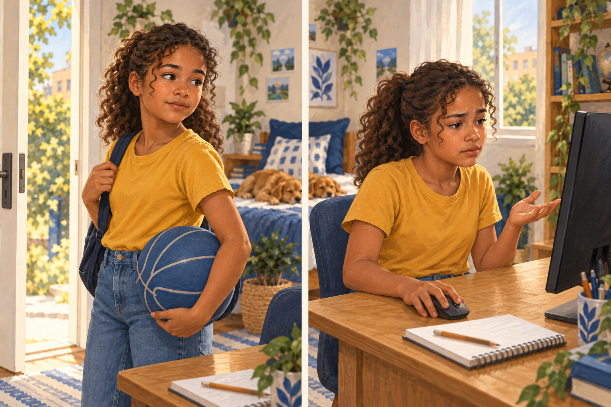
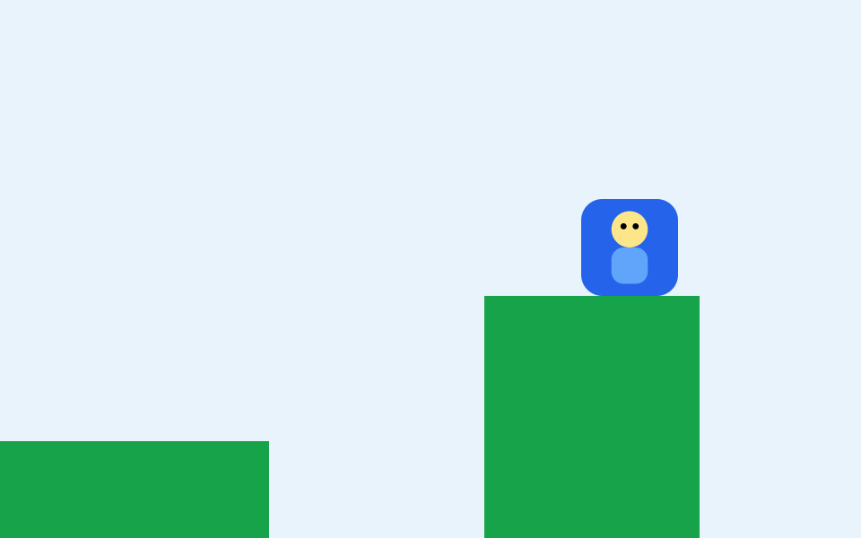
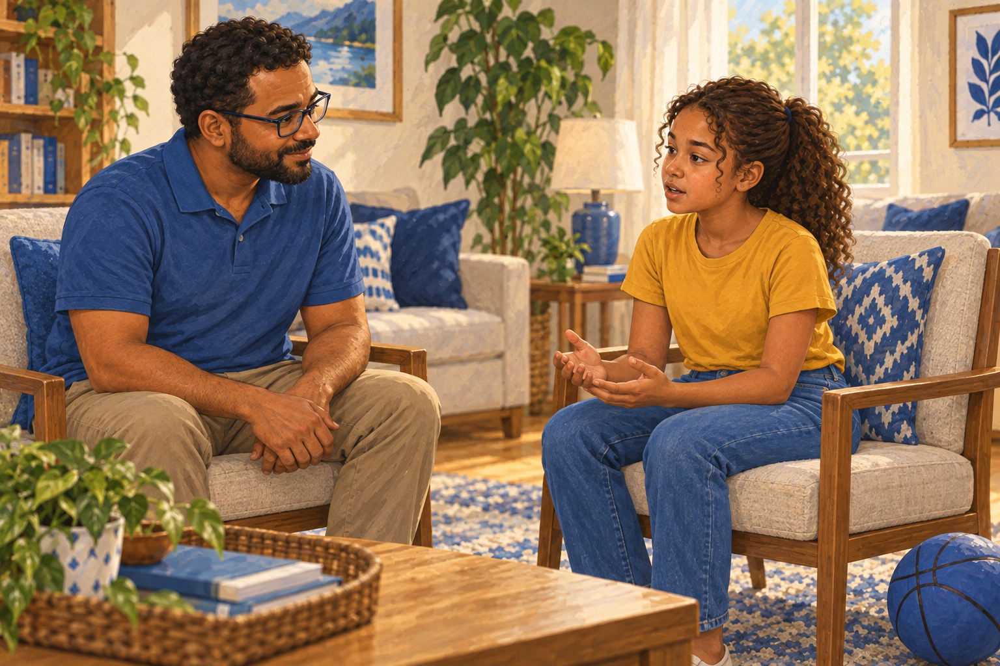

Ela perdeu o interesse?
Ou encontrou uma parte que não sabe fazer?
Uma dificuldade com nome permite procurar a ajuda certa.
Se o personagem não alcança uma plataforma, dá para olhar o salto e a distância.
O salto ficou curto.
Antes
Plataforma mais perto

O salto é o mesmo. Agora ele alcança.
A tentativa seguinte já responde a uma dúvida.

Incentivar inclui entender o motivo.
Siga o perfil para conhecer esse caminho.